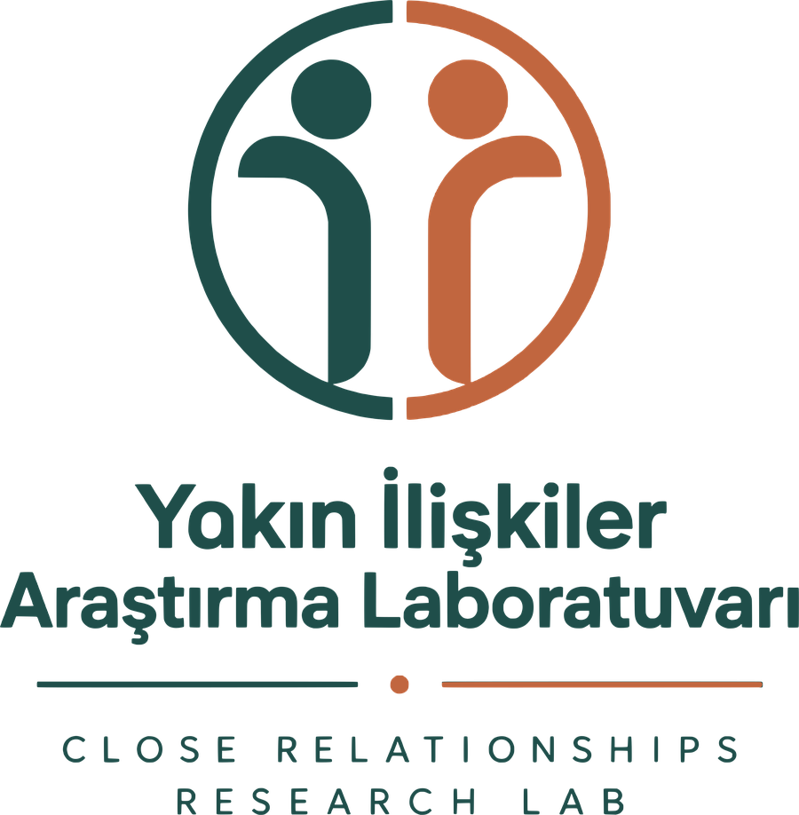

Web sitemiz geliştiriliyor Website in development
Yakın ilişkilere
bilimsel bir bakış.
A scientific lens
on close relationships.
Romantik ilişkilerden arkadaşlıklara, aile ilişkilerinden ebeveyn–çocuk bağına kadar yakın ilişkilerin dinamiklerini; duygu düzenlemeyi ve dijital yaşamın ilişkilerimize etkisini inceleyen bir araştırma ekibiyiz. We are a research team studying the dynamics of close relationships — from romantic partnerships and friendships to family bonds and parent–child relationships — along with emotion regulation and the impact of digital life on how we relate to one another.
Bizi daha yakından tanıyın. Get to know us.